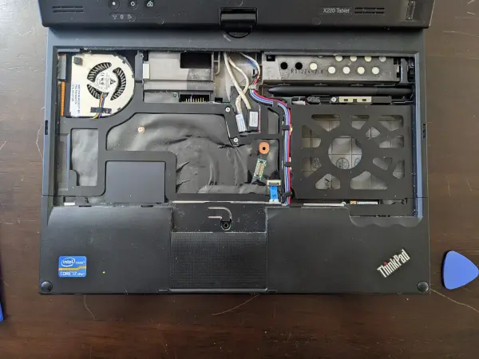
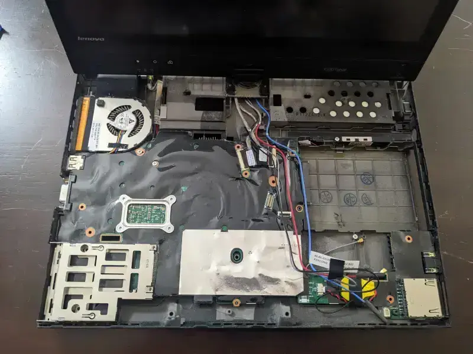

X220 Tablet Disassembly
X220 Tablet is such a lovely laptop I bought. Although its CPU is pretty weak in the standard of 2022 (i7-2640M), it is still a pretty decent Linux laptop that even have touch screen and integrated stylus.
There is a serious question for this laptop though. Since the fan is dusted, and the thermopaste on the CPU are all dried out, the CPU temperture are constantly 90 degree of Celsius, which is always really hot.
Today I dissembled the whole laptop to clean the dust on the fan and repaste the thermopaste. I am mainly following this video for step-by-step tutorial.
First of all, it is easy to disassemble the keyboard by unscrew the screws locates at the back of the laptop.
The following image also include the tools I am using for this disassembly.
Another image for the closer look on how the palmrest and those cables. Notice that at this stage, we can see the fan is extremely dirty.

Next step is to remove the palmrest. Notice that although the both sides of the palmrest are easier to detach, it took some techniques to really take out the palmrest. Some angle is required to remove the palmrest from the front side of the laptop.

We can see the Wifi card at the right-buttom corner of the laptop. Zoom in,
We need to unscrew to take out the wifi card.
To take out the remaining plastic cover in the following image, I need to use the blue triangle plastic tools to stick into the connection of the cover and the buttom, and then detach the plastic cover.
Take out, we get

At this stage and remember to unscrew all necessary, we can take the whole motherboard out.
Clean the fan, repaste, and reassembly everything, I successfully decrease the CPU temperture to 60 degree.
It shows again that the importance of maintainence of the laptop and prevent it from overheating.
Article tags: Personal Miscellaneous Technology